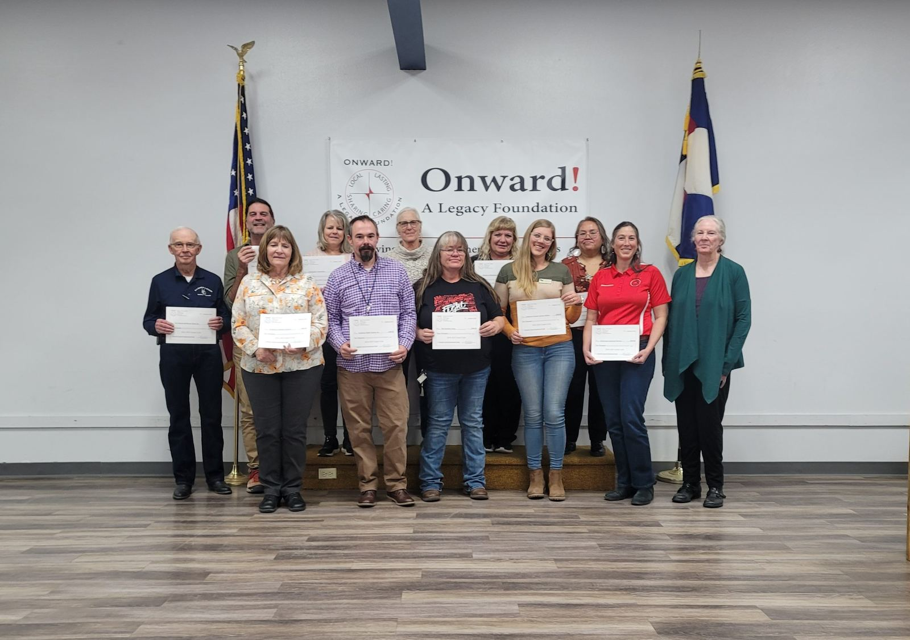
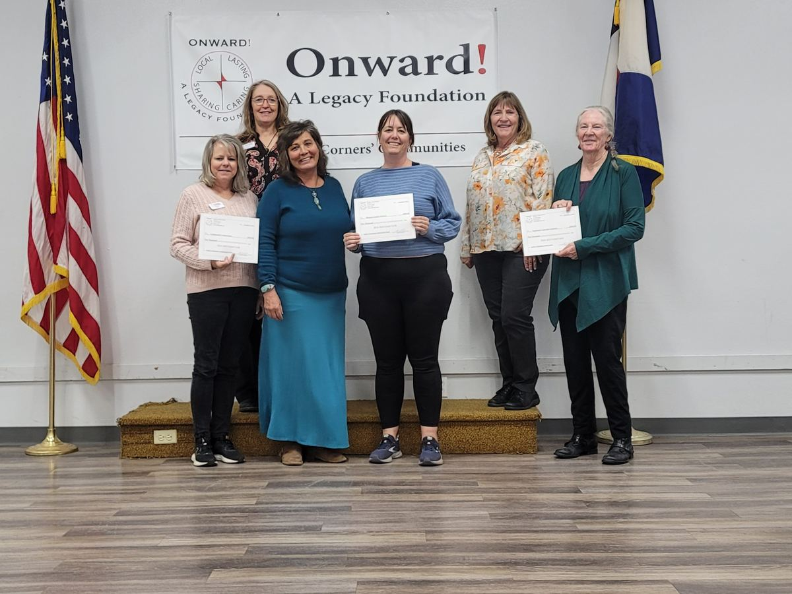
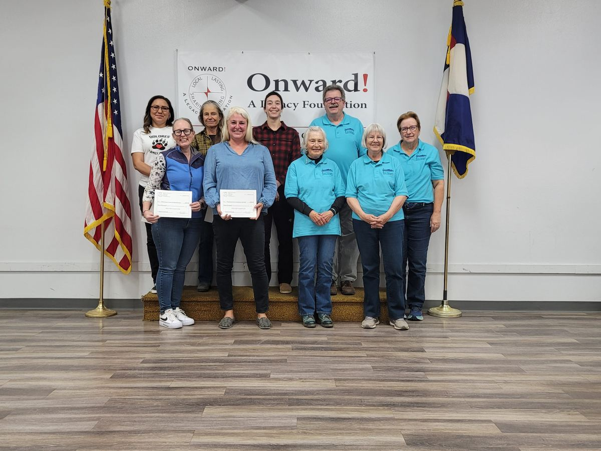
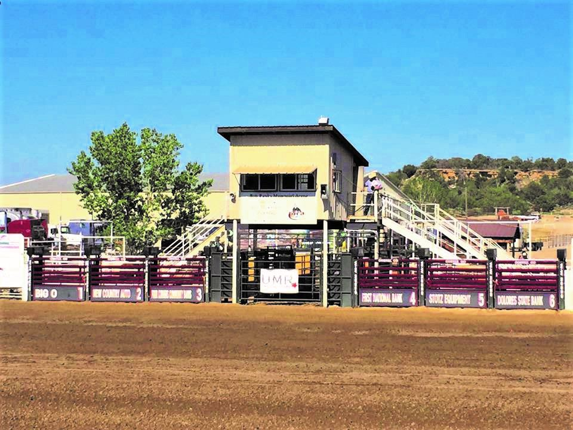
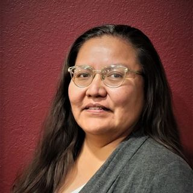
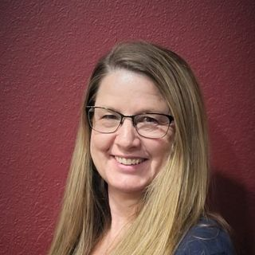
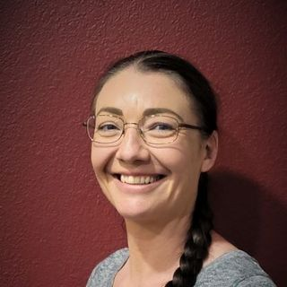

Your community foundation for the Four Corners
Local giving that lasts.
Since 2002, Onward! has helped neighbors, families and non-profits turn generosity into scholarships, grants and funds that keep giving, right here at home.
The grant cycle opens September 1. Applications are accepted September 1 through October 15.
Grant detailsStart here
What brings you to Onward!?
We do five different things for five different groups of people. Pick the one that sounds like you.
Give to a cause you love
Give online to any of our funds, or leave a gift in your will, of stock, insurance or land.
Ways to give Families & businessesStart a fund
Create a donor advised, memorial or scholarship fund without the cost of a private foundation.
See the fund types StudentsApply for a scholarship
Twenty scholarships for local students. Applications are open January 1 to April 1.
Find scholarships NonprofitsApply for a grant
Grants of $500 to $5,000 for nonprofits in five Southwest Colorado counties.
How the grant cycle works Community projectsGet a fiscal sponsor
Run your project under our 501(c)(3) status while we handle tax filings, insurance and reporting.
About fiscal sponsorshipSwipe to see all five →
For donors
Is a community foundation fund right for you?
Onward! offers the opportunity for all individuals and groups to generate income for their important causes. Partner with Onward! to:
- Simplify philanthropic giving
- Avoid the expense and complexity of creating a private foundation or separate non-profit organization
- Pool assets for higher yields and lower administrative costs
- Rely on a dedicated volunteer board of directors and the experienced professionals on our financial advisory committee
- Support your favorite cause in a variety of ways: a gift in your will, cash, stock, insurance, land or other property

Our funds, in plain language
Six kinds of funds. One careful steward.
As a donor, you can choose the type of fund that works best for your needs. Here is what each one is for.
Donor advised funds
Created by individuals or families for the benefit of other non-profit organizations.
Endowment funds
Manage assets in perpetuity and distribute the earnings annually to the beneficiary non-profit.
Agency funds
Created by other non-profit 501(c)(3)s for managing long-term funds, such as endowments and other strategic projects.
Fiscal projects
Onward! shares its 501(c)(3) status and back-office infrastructure with mission-aligned projects.
Scholarship funds
Funds created by families, alumni and local organizations to help students continue their education.
Specific interest funds
Funds that support one named cause, such as a library, the fairgrounds or a local service club.
Onward! in our community
What the support makes possible
“We feel that placing our $150,000 endowment fund with Onward has increased our credibility among community members, especially among the business community, and enhanced ongoing fundraising.”Barbara StaggMontezuma County Historical Society dba Montezuma Heritage Museum · Grant awardee
“Onward! A Legacy Foundation’s financial support played a crucial role in helping our organization navigate the challenges of the past few years and ensured that we could continue providing essential services to people with disabilities in the region. We are deeply grateful for your partnership in these very trying times.”Lisa BrannerCommunity Connections, Inc. · Grant awardee
“The Board of Directors of SouthWest Colorado Concerts are very appreciative of Onward! A Legacy Foundation for funding these (Brassfire & master class) opportunities for exciting, professional music for the students in our area.”Christine StramelSouthWest Colorado Concerts · Grant awardee
Swipe for more →



Swipe for more photos →
About Onward!
Local. Lasting. Sharing. Caring.
Our mission is to provide opportunities to develop and maintain a sustainable resource base that will enhance the quality of life for residents in the Four Corners’ communities. Our efforts focus on scholarships, civic beautification, social services, arts & culture, and organization development.
We serve with visionary leadership
We strive for collaborative and equitable relationships to benefit the future of our community.
We steward investments with integrity
We tend your generous contributions with active engagement, opportunities for growth, and long-term considerations.
We cultivate a culture of giving and caring
We make a difference through local philanthropy.
We embrace excellence
We strive for excellence through reliability, accountability, and professionalism.
We forge innovative growth
As catalysts in our community, we work to move peoples’ passions to actions.
The people behind the funds

Tharimae JonesOperations Manager
Rebecca TevaultStaff Accountant
Misty HatelyExecutive AssistantContact
We would love to hear from you.
- Visit
- 33 N. Chestnut, Cortez, CO 81321
- P.O. Box 26, Cortez, CO 81321
- Call
- (970) 565-9200
- Grants
- grants@onwardfoundation.org
- General
- info@onwardfoundation.org
Get news from Onward!
Grant deadlines, scholarship season and stories from our funds, a few times a year.